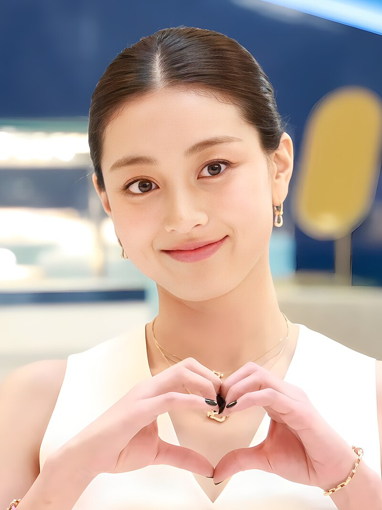
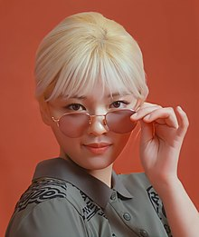
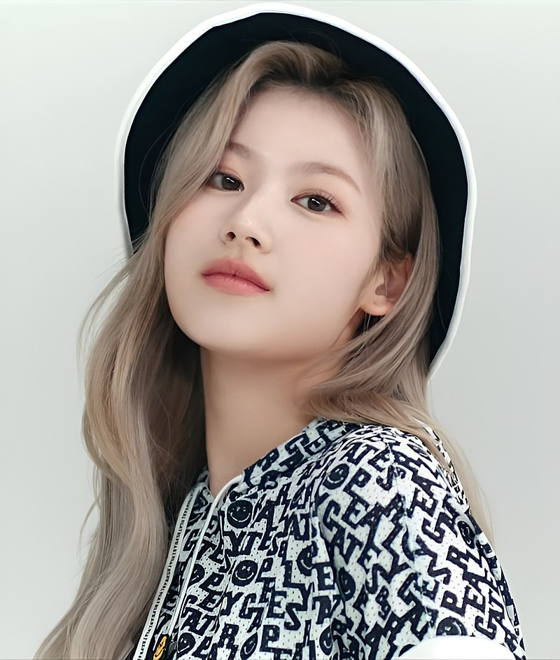
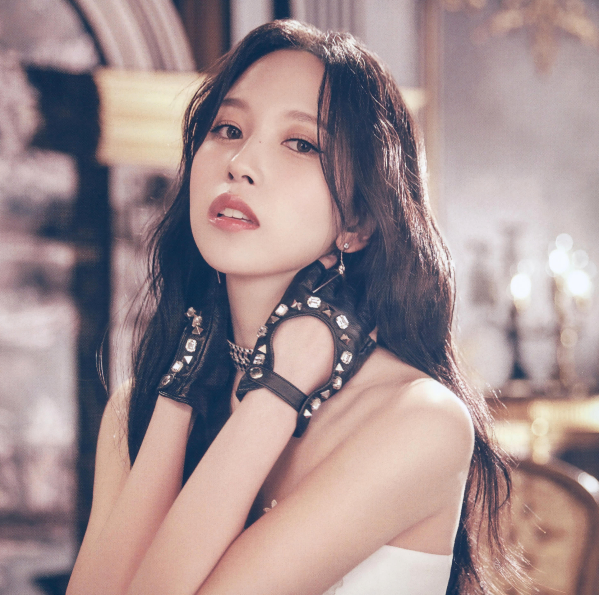

About
TWICE (Hangul: 트와이스) adalah girl group yang berbasis di Korea Selatan yang dibentuk oleh JYP Entertainment melalui acara realitas Sixteen pada tahun 2015. Grup ini terdiri dari sembilan anggota: Nayeon, Jeongyeon, Momo, Sana, Jihyo, Mina, Dahyun, Chaeyoung, dan Tzuyu. Nama grup 'TWICE' diberikan oleh Park Jin Young. Anggota grup juga membuat nama alias yang disebut NaJeongMoSaJiMiDaChaeTzu, agar semua orang mengetahui nama anggota di TWICE, dan juga untuk alasan pekerjaan agar tidak lupa setiap anggota.
Grup ini debut pada 20 Oktober 2015, dengan mini-album The Story Begins. Lightstick resmi mereka disebut 'Candy Bong'. Logo resmi Twice yang menghubungkan T dan W dirancang oleh anggota Chaeyoung dan digunakan dalam semua aktivitas resmi TWICE. Di akun SNS resmi dan saluran YouTube, logo tersebut juga diperbarui agar sesuai dengan warna konsep di setiap comeback dan digunakan sebagai gambar profil.
History
Pre-Debut
Girl Group JYP Baru dan Sixteen
Pada 19 Desember 2013, JYP Entertainment mengumumkan bahwa mereka akan mendebutkan girl group baru pada paruh pertama tahun 2014, girl group pertama yang keluar dari perusahaan tersebut sejak debut miss A pada tahun 2010. Pada 27 Februari 2014, trainee JYP Lena dan Cecilia dikonfirmasi sebagai anggota grup, sementara anggota lainnya yang dikabarkan termasuk trainee JYP Nayeon, Jeongyeon, Jisoo (kemudian Jihyo) dan Minyoung. Setelah Cecilia keluar, trainee JYP Sana menggantikannya dan 6mix hampir debut ketika Lena meninggalkan perusahaan, yang secara efektif membatalkan debut mereka.
Pada 11 Februari 2015, Park Jin-young mengumumkan bahwa formasi dari girl group beranggotakan tujuh orang yang akan datang dari JYP akan diputuskan melalui Sixteen, sebuah acara kompetisi survival yang akan ditayangkan di Mnet akhir tahun itu. Park menjelaskan dalam konferensi pers sebelum acara tersebut tayang bahwa ia berharap grup tersebut akan 'memiliki kesan alami dan sehat seperti Wonder Girls dan miss A, dengan sisi yang lebih edgy dan liar. Saya ingin meningkatkan grup berikutnya ini dengan menambahkan elemen seperti hip-hop dan rap.
Acara tersebut dimulai pada 5 Mei dan berakhir dengan Nayeon, Sana, Dahyun, Chaeyoung, Mina, Jihyo, dan Jeongyeon sebagai tujuh anggota Twice. JYP kemudian mengumumkan bahwa dia akan menambah jumlah anggota grup dari 7 menjadi 9 dengan menambahkan Tzuyu, yang merupakan 'pilihan penonton' karena dia adalah kontestan paling populer pada akhir acara, dan Momo, yang ditambahkan oleh JYP sendiri karena dia merasa grup tersebut membutuhkan seseorang dengan kemampuan pertunjukan seperti Momo. Keputusan ini kontroversial pada saat itu dengan banyak orang yang mengeluhkan bahwa kontestan yang tereliminasi bisa bergabung dengan grup.
Twice dijadwalkan debut pada akhir tahun 2015.
Pada 10 Juli 2015, Twice membuka akun Instagram resmi mereka dengan gambar pertama dari sembilan anggota yang berpose bersama. JYP Entertainment merilis Twice TV, sebuah serial web yang membagikan harapan dan cerita para anggota melalui wawancara dan mengikuti mereka saat mereka bersiap untuk debut.
Debut
Debut Dengan The Story Begins
Pada 7 Oktober 2015, JYP Entertainment meluncurkan situs web resmi band dan mengumumkan melalui SNS bahwa grup tersebut akan debut dengan mini-album The Story Begins dan lagu utama "Like OOH-AHH". Lagu ini digambarkan sebagai lagu dansa 'color pop' dengan elemen hip-hop, rock, dan R&B. Tim komposisi termasuk Black Eyed Pilseung, yang dikenal karena menyusun rilisan sukses seperti "Only You" milik Miss A. Pada 20 Oktober, album dan video musik lagu tersebut dirilis secara online dan melalui Naver V App. Grup ini mengadakan showcase langsung pada hari yang sama, di mana mereka menampilkan "Like OOH-AHH" bersama dengan lagu dansa "I Think I'm Crazy" dan "Do It Again".
Video musik tersebut mencapai 50 juta tayangan dalam lima bulan setelah debut mereka dan menjadi video musik debut yang paling banyak ditonton untuk grup K-pop mana pun. Pada bulan Desember, Twice telah menandatangani sepuluh kontrak CF dengan total pendapatan sebesar KRW1,8 miliar. Ini adalah yang terbanyak untuk girl group rookie mana pun setelah sebulan sejak debut. Pada 27 Desember, grup ini menampilkan versi remix dari single mereka "Like OOH-AHH" di SBS Gayo Daejeon, kehadiran pertama Twice pada program musik akhir tahun.
Members
Park Ji Hyo
| Posisi | Leader, Main Vocalist |
| TTL | Guri, Korea Selatan, 1 Februari 1997 |
| Zodiak | Aquarius |
| TB | 160 cm |
| BB | 49 kg |
Im Na Yeon
| Posisi | Lead Vocalist, Lead Dancer, Center, Face of the Group |
| TTL | Seoul, Korea Selatan, 22 September 1995 |
| Zodiak | Virgo |
| TB | 163 cm |
| BB | 47 kg |
Yoo Jeong Yeon
| Posisi | Lead Vocalist |
| TTL | Suwon, Korea Selatan, 1 November 1996 |
| Zodiak | Scorpio |
| TB | 167 cm |
| BB | 49.1 kg |
Hirai Momo

| Posisi | Main Dancer, Sub Vocalist, Sub Rapper |
| TTL | Kyotanabe, Jepang, 9 November 1996 |
| Zodiak | Scorpio |
| TB | 167 cm |
| BB | 48.5 kg |
Minatozaki Sana
| Posisi | Sub Vocalist |
| TTL | Osaka, Jepang, 29 Desember 1996 |
| Zodiak | Capricorn |
| TB | 168 cm |
| BB | 47 kg |
Myoui Mina
| Posisi | Main Dancer, Sub Vocalist |
| TTL | San Antonio, Texas, Amerika Serikat, 24 Maret 1997 |
| Zodiak | Aries |
| TB | 163 cm |
| BB | 46 kg |
Kim Da Hyun
| Posisi | Lead Rapper, Sub Vocalist |
| TTL | Seongnam, Korea Selatan, 28 Mei 1998 |
| Zodiak | Gemini |
| TB | 161 cm |
| BB | 48.9 kg |
Son Chae Young

| Posisi | Main Rapper, Sub Vocalist |
| TTL | Seoul, Korea Selatan, 23 April 1999 |
| Zodiak | Taurus |
| TB | 158.9 cm |
| BB | 46 kg |
Chou Tzuyu
| Posisi | Lead Dancer, Sub Vocalist, Visual |
| TTL | Tainan, Taiwan, 14 Juni 1999 |
| Zodiak | Gemini |
| TB | 170 cm |
| BB | 48 kg |